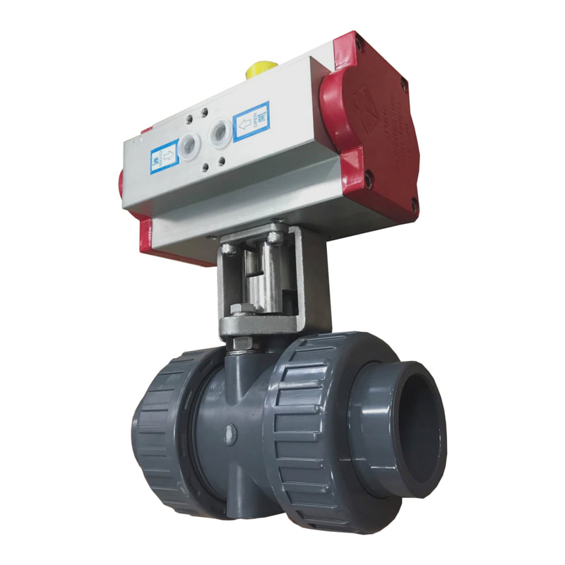

寔黈企業STONE VALVES 聯繫我們由令．塑膠閥
共 2 項產品，詳細規格歡迎來電洽詢。


氣動塑膠由令・由令組裝・汙水由令・染整由令・塑膠球閥・塑膠閥組裝・汙水用塑膠閥・氣動式塑膠閥・氣動式PVC閥・耐酸鹼塑膠閥・化學用塑膠閥・高溫用塑膠閥・耐酸鹼PVC閥・化學PVC閥・高溫用PVC閥
需要由令的規格或報價？

寔黈企業STONE VALVES 聯繫我們共 2 項產品，詳細規格歡迎來電洽詢。

氣動塑膠由令・由令組裝・汙水由令・染整由令・塑膠球閥・塑膠閥組裝・汙水用塑膠閥・氣動式塑膠閥・氣動式PVC閥・耐酸鹼塑膠閥・化學用塑膠閥・高溫用塑膠閥・耐酸鹼PVC閥・化學PVC閥・高溫用PVC閥